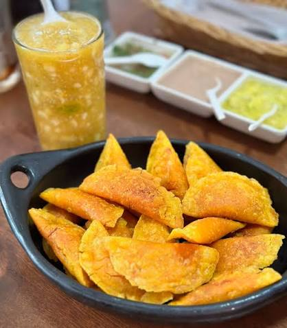
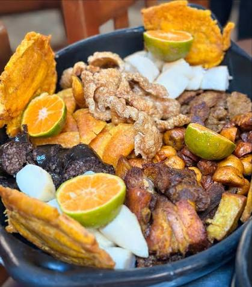
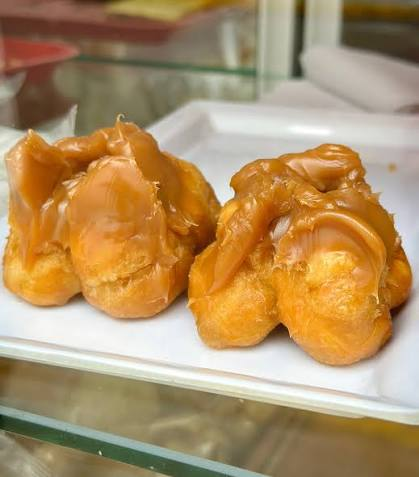

SOBRE NOSOTROS
Somos una página dedicada a compartir la riqueza gastronómica de Popayán, una ciudad reconocida por su tradición culinaria y sus deliciosos platos típicos. Nuestro objetivo es dar a conocer los sabores, ingredientes y recetas que forman parte de nuestra cultura y nuestra historia. Queremos que cada persona descubra y valore la cocina payanesa, desde sus preparaciones tradicionales hasta sus dulces más representativos, manteniendo vivas las costumbres y tradiciones que nos identifican.
PLATOS PRINCIPALES
Los platos típicos de Popayán representan la riqueza cultural y gastronómica de nuestra región. Cada preparación conserva sabores tradicionales, ingredientes locales y recetas que han pasado de generación en generación. Nuestra cocina se destaca por su variedad, sabor y autenticidad, ofreciendo delicias como la carantanta, el tamal de pipián, las empanadas de pipián y los dulces tradicionales. A través de estos platos, queremos dar a conocer nuestras tradiciones y compartir con todos el delicioso sabor de la comida payanesa.
EMPANADAS DE PIPIAN

Las empanadas de pipián son uno de los platos más representativos de Popayán. Se preparan con masa de maíz y un delicioso relleno de papa y maní. Su sabor tradicional y su textura crujiente las hacen irresistibles.
PICADA

La picada es una preparación deliciosa que reúne diferentes carnes y acompañamientos en un solo plato. Es ideal para compartir en familia o con amigos, disfrutar de buenos sabores y celebrar la tradición gastronómica colombiana en cada bocado.
ROSQUILLAS CON DULCE

La rosquilla con dulce es una deliciosa combinación tradicional que encanta por su textura crujiente y su sabor dulce. Es perfecta para acompañar una bebida caliente y disfrutar de un antojo típico, conservando el encanto de los sabores tradicionales de Popayán.